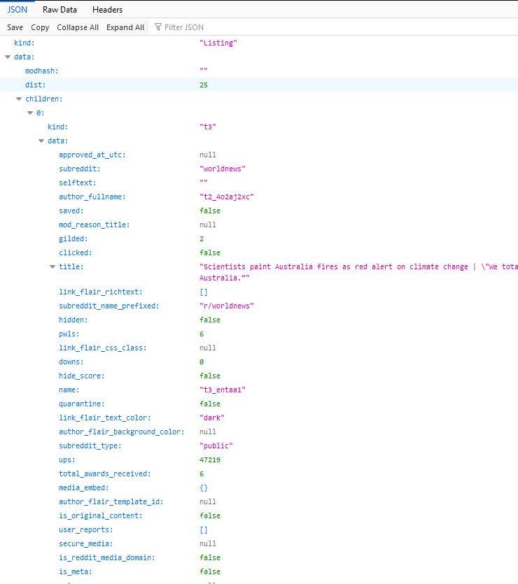
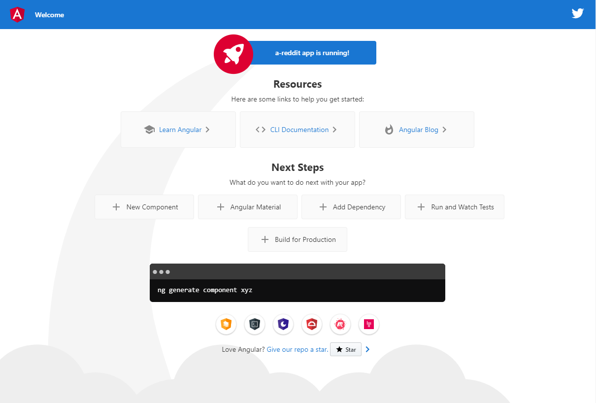

Simple Reddit client using Angular
About Reddit API
In addition to the official API, Reddit also serves JSON data out of the box. You just need to add “.json” after the url, for example: https://www.reddit.com/r/worldnews.json 
In this post I’m going to create a simple Angular app showing data from Reddit.
Angular application
First I need to create the app using Angular CLI.
ng new a-reddit
Enter the project’s directory and run the app to make sure that it is configured correctly.
cd a-reddit
ng serve
The default page should be like this.

Component
We have created the app successfully. To display the data, we need to create a component.
ng generate component dashboard
Dashboard component has been generated.
src/app/dashboard/dashboard.component.ts
import { Component, OnInit } from '@angular/core';
@Component({
selector: 'app-dashboard',
templateUrl: './dashboard.component.html',
styleUrls: ['./dashboard.component.scss']
})
export class DashboardComponent implements OnInit {
constructor() { }
ngOnInit() {
}
}
Now we need to config the routes and set the dashboard page as default page.
src/app/app-routing.module.ts
import { DashboardComponent } from './dashboard/dashboard.component'
const routes: Routes = [
{
path: '', redirectTo: '/dashboard', pathMatch: 'full'
},
{
path: 'dashboard', component: DashboardComponent
}
];
I need to remove the default page of Angular. In app.component.html, I will remove all the content except the router-outlet. I also add a container div for applying CSS later.
src/app/app.component.html
<div class="container">
<router-outlet></router-outlet>
</div>
The app will simply display the title and submitted user name, therefore, I need a class to store the values. Create a models folder and add a thread.ts file.
src/app/models/thread.ts
export class Thread {
title: string;
author: string;
permalink: string;
url: string;
createdDate: Date;
constructor(title:string, author: string, permalink: string, url: string) {
this.title = title;
this.author = author;
this.permalink = permalink;
this.url = url;
}
}
To fetch data from Reddit asynchronously, I will create a services folder, then run the command below to create a new service:
ng generate service services/dashboard
src/app/services/dashboard.service.ts
import { Injectable } from '@angular/core';
@Injectable({
providedIn: 'root'
})
export class DashboardService {
constructor() { }
}
Next step is getting data from Reddit using Http Module from Angular. First I need to inject HttpClientModule into my app.
src/app/app.module.ts
import { HttpClientModule } from '@angular/common/http';
...
imports: [
...
HttpClientModule
],
Now I will add some code to fetch data.
src/app/services/dashboard.service.ts
...
import { Observable } from 'rxjs'
import { map } from "rxjs/operators";
import { HttpClient } from '@angular/common/http'
import { Thread } from '../models/thread'
...
constructor(private httpClient: HttpClient) { }
getThreads(): Observable<any> {
return this.httpClient.get('https://old.reddit.com/r/worldnews.json').pipe(
map(res => {
return res['data']['children'].map(thread => {
let t = thread['data'];
return new Thread(t['title'], t['author'], t['permalink'], t['url']);
});
}
)
);
}
Some explanations, httpClient will send a GET request to Reddit.
this.httpClient.get('https://old.reddit.com/r/worldnews.json')
pipe is a method from RxJS which is used for composing operators. pipe accepts functions as arguments. So here I’m passing map function.
pipe(
map(
...
)
);
map function Apply projection with each value from source. That means the function below will apply to the response res.
res => {
return res['data']['children'].map(thread => {
let t = thread['data'];
return new Thread(t['title'], t['author'], t['permalink'], t['url']);
});
}
As you can see from the JSON data picture, the threads list is in data then children property. I’m using map again to handle data for each thread.
thread => {
let t = thread['data'];
return new Thread(t['title'], t['author'], t['permalink'], t['url']);
}
Config file
A config file is necessary to avoid hard coding reddit URL. I will have another post in detail about config file in Angular, for now I just give some demo code and basic explanation.
First create a config file in assets folder:
src/assets/config.json
{
"baseUrl": "https://old.reddit.com"
}
Second is creating a service to load config file, .
ng generate service services/app-config
src/app/services/app-config.service.ts
import { HttpClient } from '@angular/common/http'
...
private appConfig: any;
constructor(private http: HttpClient) { }
loadAppConfig() {
return this.http.get('/assets/config.json').toPromise().then(data => {
this.appConfig = data;
});
}
get baseUrl() {
if (!this.appConfig) {
throw Error('Config file not loaded!');
}
return this.appConfig.baseUrl;
}
The code is pretty straightforward: use HttpClient to get the config file, store the file content into appConfig property, and make a getter that return the base URL. Finally, I need to use APP_INITIALIZER, a provider that lets me specify a promise in app.module.ts to load the json file at startup.
import { APP_INITIALIZER } from '@angular/core';
import { AppConfigService } from './services/app-config.service'
...
providers: [
{
provide: APP_INITIALIZER,
multi: true,
deps: [AppConfigService],
useFactory: (appConfigService: AppConfigService) => {
return () => {
return appConfigService.loadAppConfig();
};
}
}
],
Back to dashboard.service.ts, replace the hard-coded URL with config file.
src/app/services/dashboard.service.ts
import { AppConfigService } from '../services/app-config.service'
...
constructor(private httpClient: HttpClient, private appConfigService: AppConfigService) { }
getThreads(): Observable<any> {
return this.httpClient.get(this.appConfigService.baseUrl + '/r/worldnews.json').pipe(
map(res => {
return res['data']['children'].map(thread => {
let t = thread['data'];
return new Thread(t['title'], t['author'], t['permalink'], t['url']);
});
}
)
);
}
That’s all for the service, then to the component.
src/app/dashboard/dashboard.component.ts
import { Thread } from '../models/thread'
import { DashboardService } from '../services/dashboard.service'
...
threads: Thread[];
constructor(private dashboardService: DashboardService) {
this.threads = []
}
ngOnInit() {
this.getThreads();
}
getThreads(): void {
this.dashboardService.getThreads().subscribe(res => {
this.threads = res;
})
}
Finally, I need to create the HTML to show the data.
src/app/dashboard/dashboard.component.html
<div class="list-thread">
<div class="thread" *ngFor="let thread of threads">
<div class="title">{{ thread.title }}</div>
<div class="info">{{ thread.author }}</div>
</div>
</div>
That’s all for the coding. Now enter the command below and checkout the result:
ng serve